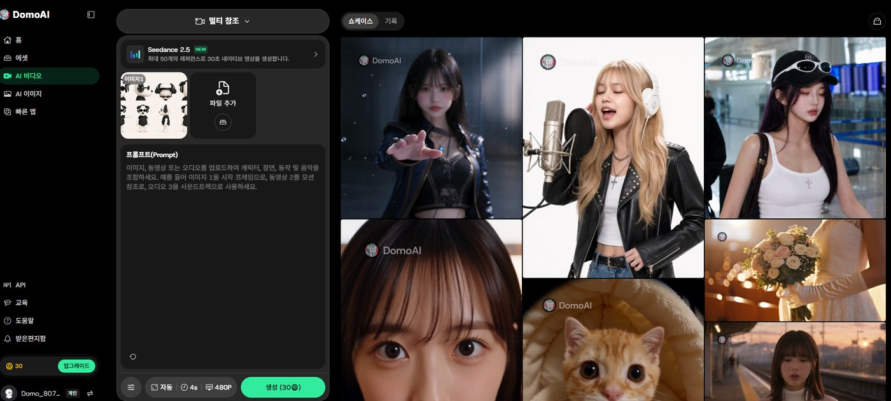
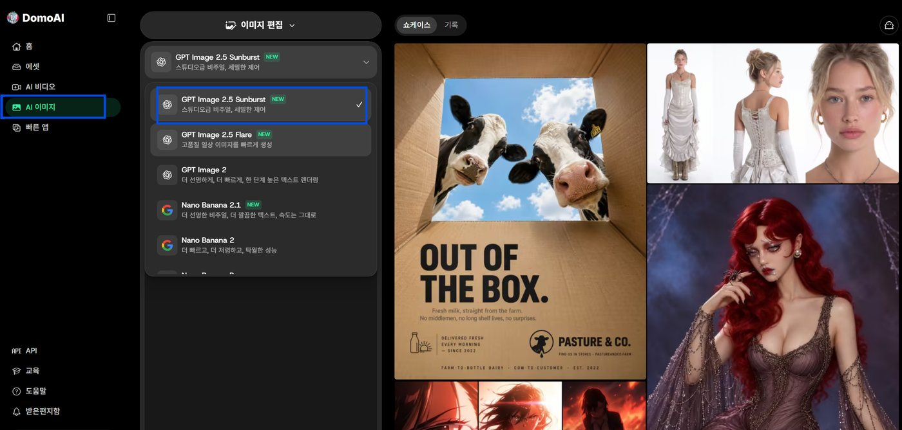
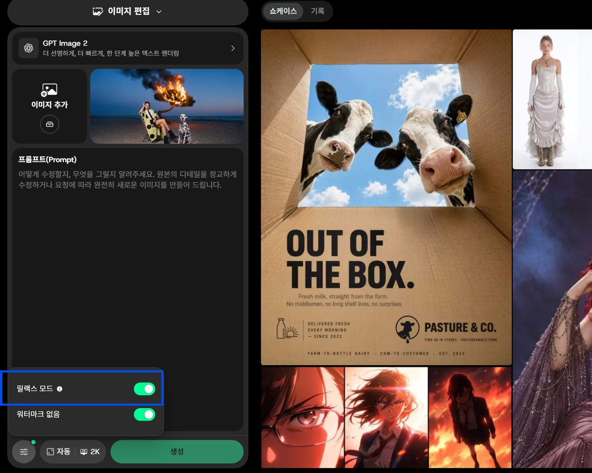
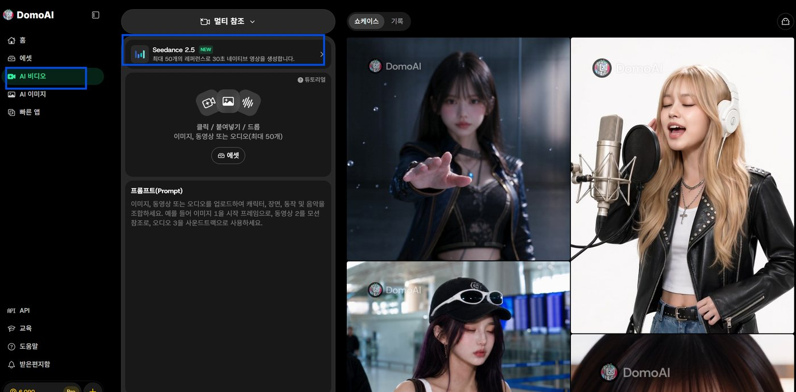
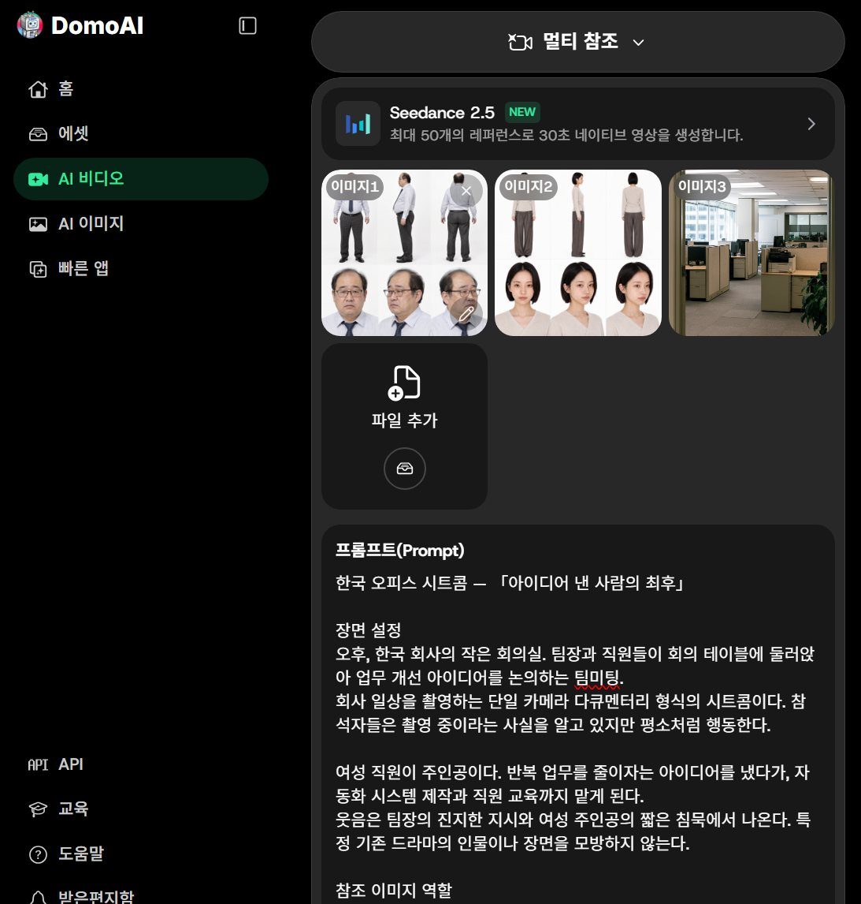

DomoAI | 사이트 하나로 AI 숏드라마 만들기
인물·배경 이미지부터 대사 있는 영상까지 DomoAI 한 곳에서 짧은 드라마를 만드는 순서.
사용 툴 · DomoAI, GPT Image 2, Seedance 2.5
이번 영상은 DomoAI로 만들었어요. 이미지는 릴랙스 모드로 크레딧 걱정 없이 여러 장 뽑아보고, 마음에 드는 인물과 배경만 골라 영상으로 넘겼어요.
이 가이드는 만들고 싶은 장면을 정한 상태에서 시작해요. 캡처는 실제 제작한 화면이고, 프롬프트는 다른 이야기에도 쓸 수 있도록 정리했어요.
초보 분들을 위해 아주 상세하게 기재해두었으니 도움이 되시길 바랍니다!
🔗 사용할 사이트
- 👉 DomoAI 바로가기
- 가입 시 30크레딧이 주어지며, 시댄스 2.5 모델(최상위 모델) 기준 4초 영상 1개 생성 가능 or 시댄스 2.0 fast 2개 생성 가능합니다.

✅ 시작 전 준비물
- DomoAI 계정
- 만들고 싶은 장면 한 줄 (등장인물 2명 + 장소 1곳이면 충분해요)
- 대사 2~4줄
✅ 제작 순서 한눈에 보기
| 단계 | 할 일 |
|---|---|
| STEP 1 | DomoAI 접속 |
| STEP 2 | AI 이미지 → 편집에서 캐릭터 시트·배경 만들기 |
| STEP 3 | AI 비디오 → 멀티참조 → Seedance 2.5 선택 |
| STEP 4 | 캐릭터 시트·배경 넣고 장면·대사 프롬프트 입력 |
| STEP 5 | 생성 → 완성 영상 확인 |
STEP 1. DomoAI 접속하기
- 👉 DomoAI에 접속해 로그인
- 왼쪽 메뉴에서 AI 이미지와 AI 비디오 위치 확인하기
이미지는 AI 이미지, 영상은 AI 비디오 메뉴에서 만들어요.
STEP 2. AI 이미지 → 편집에서 캐릭터 시트·배경 만들기

- AI 이미지 클릭 → 상단 메뉴에서 이미지 편집 선택
- 모델은 GPT Image 2 선택
- 하단 설정에서 릴랙스 모드 켜기

캐릭터 시트 만들기
주인공마다 캐릭터 시트를 하나씩 만들어요. 전신 앞·옆·뒤와 얼굴 클로즈업이 한 장에 있어야 영상에서 얼굴과 의상이 컷마다 바뀌지 않아요.
만들려고 하는 인물의 얼굴을 첨부 후 아래 프롬프트를 넣어도 되고, 텍스트로 특징을 설명해서 생성해도 됩니다.
📋 캐릭터 시트 프롬프트 ① 얼굴 사진을 첨부할 때
[첨부한 이미지] 속 인물을 참고해서 흰 배경 스튜디오에서 촬영한 캐릭터 시트를 만들어줘.
상단에는 같은 인물의 전신 정면, 측면, 후면 3컷,
하단에는 얼굴 정면, 3/4 각도, 반대쪽 3/4 각도 클로즈업 3컷을 배치한다.
인물은 [나이·성별·헤어·의상].
모든 컷에서 얼굴, 헤어, 의상이 동일하다. 자연스러운 피부 질감의 실사 사진.
📋 캐릭터 시트 프롬프트 ② 사진 없이 텍스트로 특징을 설명할 때
첨부할 사진이 없다면, 아래 빈칸만 채워서 넣어주세요. 나이 → 성별 → 얼굴 → 헤어 → 체형 → 상의 → 하의 → 신발 순서로 적으면 빠뜨리는 부분 없이 정리돼요.
흰 배경 스튜디오에서 촬영한 캐릭터 시트를 만들어줘.
상단에는 같은 인물의 전신 정면, 측면, 후면 3컷,
하단에는 얼굴 정면, 3/4 각도, 반대쪽 3/4 각도 클로즈업 3컷을 배치한다.
인물 설정
- 나이와 성별: [예: 20대 후반 한국인 여성]
- 얼굴: [예: 갸름한 얼굴, 쌍꺼풀 없는 눈, 옅은 주근깨]
- 헤어: [예: 턱선 길이의 검은 단발, 가르마는 오른쪽]
- 체형: [예: 마른 체형, 키 160cm 정도]
- 상의: [예: 베이지색 랩 니트 가디건]
- 하의: [예: 회갈색 와이드 슬랙스]
- 신발: [예: 검정 포인티드 플랫 슈즈]
- 분위기: [예: 차분하고 똑 부러지는 신입 사원]
모든 컷에서 얼굴, 헤어, 의상이 동일하다.
메이크업은 자연스럽고, 피부 질감이 살아 있는 실사 사진으로 만든다.
✏️ 예시 ① 김대리 (이번 영상 주인공)
흰 배경 스튜디오에서 촬영한 캐릭터 시트를 만들어줘.
상단에는 같은 인물의 전신 정면, 측면, 후면 3컷,
하단에는 얼굴 정면, 3/4 각도, 반대쪽 3/4 각도 클로즈업 3컷을 배치한다.
인물 설정
- 나이와 성별: 20대 후반 한국인 여성
- 얼굴: 갸름한 얼굴, 쌍꺼풀 없는 또렷한 눈, 코와 볼에 옅은 주근깨
- 헤어: 턱선 길이의 검은 단발, 오른쪽 가르마, 한쪽 머리를 귀 뒤로 넘김
- 체형: 마른 체형
- 상의: 베이지색 립 조직 랩 니트, 옆구리에서 끈으로 묶는 디자인
- 하의: 회갈색 핀턱 와이드 슬랙스
- 신발: 검정 포인티드 플랫 슈즈
- 분위기: 차분하고 아이디어가 많은 사원
모든 컷에서 얼굴, 헤어, 의상이 동일하다.
메이크업은 자연스럽고, 피부 질감이 살아 있는 실사 사진으로 만든다.
✏️ 예시 ② 부장님
흰 배경 스튜디오에서 촬영한 캐릭터 시트를 만들어줘.
상단에는 같은 인물의 전신 정면, 측면, 후면 3컷,
하단에는 얼굴 정면, 3/4 각도, 반대쪽 3/4 각도 클로즈업 3컷을 배치한다.
인물 설정
- 나이와 성별: 50대 중반 한국인 남성
- 얼굴: 둥글고 넓은 얼굴, 처진 눈매, 피곤해 보이는 무표정
- 헤어: 정수리가 비어 있는 숱 적은 검은 머리, 옆머리는 짧게 정리
- 안경: 얇은 금속테 사각 안경
- 체형: 배가 나온 통통한 체형
- 상의: 연한 하늘색 긴소매 셔츠, 남색 도트 넥타이
- 하의: 짙은 회색 정장 바지, 검정 벨트
- 신발: 검정 구두
- 분위기: 회의 때마다 일을 떠넘기는 팀장님
모든 컷에서 얼굴, 헤어, 의상이 동일하다.
피부 질감이 살아 있는 실사 사진으로 만든다.
배경 이미지 만들기
배경은 사람이 없는 빈 공간으로 만들어요. 인물은 캐릭터 시트로 따로 넣기 때문에, 배경에 사람이 있으면 영상에서 인물이 겹칠 수 있어요.
아래 순서로 적으면 원하는 공간이 잘 나와요.
- 어떤 장소인지 — 회의실, 고깃집, 동네 카페
- 어디서 바라본 구도인지 — 문 앞에서, 테이블 끝에서, 창가 쪽에서
- 무엇이 놓여 있는지 — 가구, 소품, 벽과 바닥
- 언제, 어떤 빛인지 — 오후 햇살, 저녁 조명, 형광등
- 분위기 — 평범한 일상, 긴장감, 따뜻함
📋 배경 프롬프트 기본형
[장소]를 [바라보는 위치]에서 바라본 세로 9:16 구도의 실사 사진.
[가구와 소품 묘사].
[벽, 바닥, 창문 묘사].
[시간대]의 [빛 묘사]가 공간을 비춘다.
사람은 없고, [분위기] 느낌의 평범한 일상 공간이다.
🏢 예시 오피스 ① 회의실 (이번 영상)
한국 회사의 작은 회의실을 출입문 쪽에서 바라본 세로 9:16 구도의 실사 사진.
가운데에 6인용 나무 회의 테이블이 놓여 있고, 회색 패브릭 의자들이 둘러싸고 있다.
테이블 위에는 노트와 펜, 서류 파일이 흩어져 있다.
한쪽 벽은 통창이고 흰 블라인드가 반쯤 내려와 있으며, 맞은편 벽에는 화이트보드가 걸려 있다.
오후 햇살이 블라인드 사이로 들어와 테이블 위에 줄무늬 그림자를 만든다.
사람은 없고, 회의가 막 시작되기 전 같은 차분한 분위기다.
🏢 예시 오피스 ② 파티션 사무실
오래된 한국 사무실을 입구 문틀 너머로 바라본 세로 9:16 구도의 실사 사진.
베이지색 파티션으로 나뉜 책상들이 줄지어 있고, 책상 위에는 모니터, 서류 더미, 머그컵이 놓여 있다.
파티션 옆에는 복합기와 키 큰 화분이 있다.
천장에는 사각 형광등 패널이 이어져 있고, 바닥은 회색 카펫 타일이다.
멀리 창문으로 맞은편 건물이 보이고, 오후의 밝은 자연광과 형광등 빛이 섞여 있다.
사람은 없고, 점심시간에 잠깐 비어 있는 듯한 평범한 사무실 분위기다.
🍖 예시 식당 ① 회식하는 고깃집
한국 동네 고깃집 내부를 가게 안쪽 테이블에서 입구 방향으로 바라본 세로 9:16 구도의 실사 사진.
가운데에 원형 불판이 들어간 스테인리스 테이블이 있고, 위로 은색 원통형 환기 덕트가 내려와 있다.
테이블 위에는 상추 바구니, 쌈장, 소주잔, 초록색 소주병, 반찬 그릇이 차려져 있다.
벽에는 손글씨 메뉴판과 연예인 사인지가 붙어 있고, 바닥은 오래된 타일이다.
저녁 시간의 따뜻한 주황색 조명이 공간을 비추고, 불판 주변에 연기가 살짝 남아 있다.
사람은 없고, 회식이 시작되기 직전의 왁자지껄한 분위기가 느껴진다.
🍜 예시 식당 ② 회사 앞 점심 식당
회사 근처 한식 백반집 내부를 계산대 옆에서 바라본 세로 9:16 구도의 실사 사진.
나무 테이블 4개가 일렬로 놓여 있고, 각 테이블 위에 수저통, 물병, 냅킨 통이 있다.
벽에는 김치찌개, 제육볶음 같은 메뉴가 적힌 메뉴판과 벽걸이 TV가 달려 있다.
입구 유리문으로 점심때의 밝은 햇살이 들어오고, 천장에는 하얀 형광등이 켜져 있다.
사람은 없고, 점심 손님이 몰려오기 직전의 분주한 동네 식당 분위기다.
☕ 예시 카페 · 동네 카페 창가
조용한 동네 카페 내부를 창가 자리 옆에서 바라본 세로 9:16 구도의 실사 사진.
창가를 따라 원목 테이블 두 개와 라탄 의자가 놓여 있고, 테이블 위에는 라떼 잔과 작은 화분이 있다.
벽은 하얀 회벽이고, 선반에는 원두 봉투와 컵들이 진열되어 있다.
큰 통유리창으로 오후 햇살이 비스듬히 들어와 테이블과 바닥에 부드러운 빛이 번진다.
사람은 없고, 소개팅 직전처럼 살짝 설레는 따뜻한 분위기다.
🏠 예시 집 · 원룸 거실
20대 직장인이 사는 원룸을 현관 쪽에서 바라본 세로 9:16 구도의 실사 사진.
벽 쪽에 회색 2인용 소파와 작은 원형 러그가 있고, 앞에 낮은 테이블 위로 노트북과 배달 음식 봉투가 놓여 있다.
창가에는 빨래 건조대와 작은 화분이 있고, 벽에는 포스터 한 장이 붙어 있다.
밤 시간이라 스탠드 조명의 노란 불빛만 켜져 있고, 창밖으로 도시 불빛이 보인다.
사람은 없고, 퇴근 후의 지친 듯 편안한 분위기다.
💡 처음에는 인물 2명·장소 1곳으로 시작해보세요. 영상에서 인물을 구분하기 한결 쉬워요.
STEP 3. AI 비디오 → 멀티참조 → Seedance 2.5 선택하기

- 왼쪽 메뉴에서 AI 비디오 클릭
- 상단 메뉴에서 멀티참조 선택
- 모델은 Seedance 2.5 선택
STEP 4. 캐릭터 시트·배경 넣고 프롬프트 입력하기

- STEP 2에서 만든 캐릭터 시트 2장 + 배경 1장을 레퍼런스로 올리기
- 프롬프트에 장면 설정 → 등장인물 → 컷 구성 → 대사 순서로 적기
- 대사는 따옴표 안에 한국어로 그대로 적기 — 영상 속 인물이 그 대사를 말해요
📋 이번 영상에 실제로 쓴 프롬프트
완성 영상의 프롬프트 그대로예요. 장면 설정부터 샷별 구도, 연기, 소리까지 어느 정도로 자세하게 적었는지 참고해보세요.
🎬 「아이디어 낸 사람의 최후」 전체 프롬프트 보기
한국 오피스 시트콤 — 「아이디어 낸 사람의 최후」
장면 설정
오후, 한국 회사의 작은 회의실. 팀장과 직원들이 회의 테이블에 둘러앉아 업무 개선 아이디어를 논의하는 팀미팅.
회사 일상을 촬영하는 단일 카메라 다큐멘터리 형식의 시트콤이다. 참석자들은 촬영 중이라는 사실을 알고 있지만 평소처럼 행동한다.
여성 직원이 주인공이다. 반복 업무를 줄이자는 아이디어를 냈다가, 자동화 시스템 제작과 직원 교육까지 맡게 된다.
웃음은 팀장의 진지한 지시와 여성 주인공의 짧은 침묵에서 나온다. 특정 기존 드라마의 인물이나 장면을 모방하지 않는다.
참조 이미지 역할
@Image 1 — 팀장. 얼굴, 헤어스타일, 체형과 의상을 유지한다. 참조 이미지의 배경이나 구도는 복사하지 않는다.
@Image 2 — 여성 주인공. 얼굴, 헤어스타일, 체형, 의상과 캐릭터 고유의 표현 스타일을 유지한다. 임의로 실사화하거나 다른 사람처럼 바꾸지 않는다.
@Image 3 — 회의실. 테이블, 의자, 창문, 출입문과 공간 배치를 참조한다.
인물과 배경은 여성 주인공의 시각적 스타일에 맞춰 자연스럽게 통일한다.
영상 형식
총 20초. 세로 9:16.
네 개의 샷으로 구성한다.
7초, 12초, 15초에 하드 컷한다.
모든 대사는 자연스러운 한국어로 말한다.
생성 영상에 자막, 설명 문구, 로고를 넣지 않는다.
배경음악, 관객 웃음소리, 코믹 효과음은 없다.
참석자와 공간 배치
팀미팅 참석자는 총 다섯 명이다.
팀장 한 명, 여성 주인공 한 명, 다른 팀원 세 명.
팀장은 테이블 상석의 화면 왼쪽에 앉아 있다.
여성 주인공은 테이블 오른쪽에 앉아 팀장을 바라본다.
주인공 앞에는 펼친 노트가 있고, 오른손에는 펜을 들고 있다.
다른 팀원 세 명은 카메라와 가까운 테이블 양옆에 앉아 있다.
전경 양쪽에는 두 팀원의 뒤통수 아래 부분과 등·어깨가 일부 보이고, 화면 가장자리에는 나머지 팀원의 어깨와 팔 일부만 걸친다.
이들이 만드는 전경 너머로 팀장과 주인공이 보여, 여러 사람이 참석한 팀미팅이라는 것이 첫 프레임부터 분명하다.
다른 팀원들의 얼굴은 모든 샷에서 보이지 않는다.
얼굴을 흐리게 처리하는 방식이 아니라, 카메라를 등지거나 화면 밖으로 잘린 구도로 얼굴 자체가 노출되지 않게 한다.
옆얼굴, 눈, 코, 입, 유리나 모니터에 비친 얼굴도 보여주지 않는다.
이들은 카메라를 향해 돌아보지 않으며 대사를 하지 않는다.
작게 필기하거나 자세를 고치는 자연스러운 움직임만 보인다.
주인공의 얼굴과 주요 행동을 가리지 않는다.
노트와 벽면에는 읽을 수 있는 글자를 보여주지 않는다.
첫 프레임부터 팀장의 작은 손짓과 참석자들의 필기 동작이 이어진다.
0.0~7.0초 — 팀미팅에서 아이디어를 내는 순간
출입문 쪽에서 다른 팀원들의 어깨와 뒷모습 너머로 촬영한 미디엄 와이드 샷.
전경에는 팀원들의 몸 일부, 중경에는 팀장과 여성 주인공이 보인다.
팀장은 회의 참석자 전체를 향해 시선을 천천히 돌리며 한 손을 가볍게 펼친다.
팀장: "자유롭게 아이디어 내봐."
여성 주인공은 필기를 멈추고, 펜을 든 오른손을 가슴 높이로 살짝 들어 발언한다.
팀장의 시선이 주인공에게 향한다.
주인공의 표정에는 실제로 업무를 개선할 수 있을 것이라는 작은 기대가 드러난다.
여성 주인공: "이거 자동화하면 시간 줄일 수 있을 것 같은데요."
대사는 서로 겹치지 않는다.
다른 팀원들은 자리에 앉아 듣고 있으며, 얼굴이 보이는 반응 샷으로 전환하지 않는다.
7.0~12.0초 — 아이디어가 업무가 되는 순간
하드 컷.
여성 주인공의 어깨 너머로 팀장을 촬영한다.
프레임 한쪽 가장자리에는 다른 팀원의 어깨 일부가 흐릿하게 걸쳐 있어 팀미팅의 공간감을 유지한다.
팀장은 좋은 담당자를 찾았다는 듯 주인공을 바라보며 만족스럽게 한 번 끄덕인다.
팀장: "좋네. 김 대리가 만들어서 직원 교육까지 해줘."
팀장은 농담하거나 비꼬지 않는다.
자신이 좋은 아이디어를 적극적으로 지원하고 있다고 진심으로 믿는다.
지시를 마친 뒤 아무렇지 않게 앞에 놓인 서류를 내려다본다.
다른 팀원들은 조용히 필기를 이어간다.
12.0~15.0초 — 뒤늦은 후회
하드 컷.
다른 팀원의 어깨를 화면 한쪽 전경에 조금 걸친 채 여성 주인공의 상반신을 촬영한다.
주인공의 얼굴과 펜을 든 오른손이 명확하게 보인다.
여성 주인공은 잠깐 멈춘다.
조금 전까지 들고 있던 오른손을 천천히 내려 펜을 노트 위에 놓는다.
입가에 남아 있던 작은 미소가 사라진다.
12.8초에 얼굴로 짧고 빠르게 스냅 줌한다.
줌이 들어가면서 전경의 팀원 어깨는 자연스럽게 프레임 밖으로 빠진다.
여성 주인공은 팀장을 바라보다가, 14초부터 카메라 렌즈를 정확히 1초 바라본다.
눈을 크게 뜨거나 한숨을 과장하지 않는다.
"제가 방금 무슨 짓을 한 거죠?"라는 의미를 시선으로만 전달한다.
이 구간에는 대사가 없다.
펜이 노트에 닿는 작은 소리와 회의실 생활 소음만 들린다.
다른 팀원들의 웃음이나 과장된 반응은 없다.
15.0~20.0초 — 주인공 인터뷰
하드 컷.
회의 후 같은 회의실의 다른 구석에서 촬영한 여성 주인공의 단독 인터뷰.
이 샷에는 주인공만 보인다.
주인공은 화면 중앙에 앉아 렌즈 바로 옆의 보이지 않는 인터뷰어를 바라본다.
손은 무릎 위에 둔다.
여성 주인공: "업무를 줄이자는 아이디어였어요. 제 업무 말고요."
첫 문장은 담담하게 말한다.
"제 업무 말고요" 앞에서 아주 짧게 쉬고, 마지막까지 웃지 않는다.
대사가 끝난 뒤 표정을 잠깐 유지하고 바로 종료한다.
연기 기준
팀장은 악역처럼 행동하지 않는다. 일을 잘 배분했다고 생각하는 평범한 관리자다.
여성 주인공의 감정은 작은 기대에서 당황, 체념으로 변한다.
이 변화는 미소가 사라지는 순간, 손을 내리는 속도, 카메라를 보는 시선으로 표현한다.
다른 팀원들은 이 상황을 평범한 업무 배분으로 받아들이듯 조용히 회의를 이어간다.
누구도 웃기려는 말투나 과장된 몸짓을 사용하지 않는다.
카메라와 연속성
첫 세 샷은 테이블의 출입문 쪽에서 촬영해 인물의 좌우 관계를 유지한다.
관찰형 다큐멘터리처럼 미세한 손떨림만 사용한다.
스냅 줌은 12.8초에 한 번만 사용한다.
렌즈를 직접 바라보는 행동은 주인공이 14~15초에 한 번만 한다.
다른 팀원 세 명의 좌석과 의상은 샷이 바뀌어도 유지한다.
매 샷에 세 명 모두를 담을 필요는 없지만, 보이는 사람의 위치가 갑자기 바뀌거나 새로운 참석자가 추가되지 않는다.
다른 팀원들의 얼굴을 보여주는 역방향 샷이나 개별 클로즈업을 넣지 않는다.
여성 주인공의 펜은 처음부터 오른손에 있다가 12~13초 사이 노트 위에 놓인다.
얼굴, 헤어스타일, 의상, 소품과 회의실 구조가 샷마다 바뀌지 않는다.
조명과 소리
천장 조명과 창문에서 들어오는 부드러운 오후 빛.
인터뷰를 포함해 전체 영상의 밝기와 색온도를 일정하게 유지한다.
작은 냉난방기 소리, 종이 넘기는 소리, 참석자들의 가벼운 필기 소리를 자연스럽게 사용한다.
대사는 각 화자의 입 움직임과 맞고, 마지막 음절까지 또렷하게 들린다.
지정된 대사 외에 추가 발언이나 내레이션을 넣지 않는다.
🤖 GPT·Claude로 내 이야기 영상 프롬프트 뽑기
아래 요청문을 통째로 복사해서 GPT나 Claude에 붙여넣고, 맨 위 [내 이야기] 3줄만 바꿔주세요. 상대 인물, 대사, 샷 구성, 카메라, 연기는 AI가 이번 영상 프롬프트 구조에 맞춰 알아서 짜줘요.
아래 [참고 프롬프트]는 장르에 상관없이 쓸 수 있는 AI 영상 프롬프트 틀이야.
이 틀의 구조와 작성 방식을 그대로 가져와서, [내 이야기]에 맞는 새 영상 프롬프트로 재구성해줘.
[내 이야기] *아래는 예시입니다.
- 짧은 스토리: 매일 엘리베이터에서 마주치는 두 사람. 한 사람이 이사 간다는 걸 알고 처음으로 말을 건다
- 형식(장르): 잔잔한 감성 로맨스 웹드라마
- 주인공 특징: 20대 중반 남성 직장인, 수줍음이 많고 다정하다
[재구성 규칙]
- 참고 프롬프트의 [ ] 부분은 내 이야기에 맞는 구체적인 내용으로 채우고, [ ]와 예시 문구는 남기지 않는다.
- 샷 이름과 연출은 형식(장르)에 맞게 바꿔도 된다.
- 소제목과 순서는 참고 프롬프트를 그대로 따른다.
(장면 설정 → 참조 이미지 역할 → 영상 형식 → 등장인물과 공간 배치 → 샷별 구성 → 연기 기준 → 카메라와 연속성 → 조명과 소리)
- 영상은 총 20초, 세로 9:16, 4샷으로 구성한다.
- 참조 이미지는 업로드 순서대로 @Image 1 주인공, @Image 2 상대 인물, @Image 3 배경으로 지정한다.
- 상대 인물, 장소, 대사, 샷 구성은 이야기에 맞게 네가 정한다.
- 대사는 짧고 자연스러운 한국어 구어체로, 인물당 1~2줄만 쓴다.
- 마지막 샷에는 여운이 남는 반전이나 한마디를 넣는다.
- 모든 문장은 "~한다"로 끝나는 서술형으로 구체적으로 쓴다.
- 최종 프롬프트만 코드 블록 하나로 보여준다.
[참고 프롬프트]
[형식] — 「[제목]」
장면 설정
[시간대], [장소]. [어떤 상황인지 한두 문장].
[형식 설명. 예: 일상을 촬영하는 단일 카메라 다큐멘터리 형식 / 감성 웹드라마 / 셀카 브이로그]이다.
[주인공]이 주인공이다. [주인공에게 일어나는 사건].
[웃음·설렘·긴장 같은 감정 포인트]는 [어떤 순간]에서 나온다.
참조 이미지 역할
@Image 1 — 주인공. 얼굴, 헤어스타일, 체형과 의상을 유지한다. 참조 이미지의 배경이나 구도는 복사하지 않는다.
@Image 2 — [상대 인물]. 얼굴, 헤어스타일, 체형과 의상을 유지한다.
@Image 3 — [장소]. [가구, 창문, 출입문 등] 공간 배치를 참조한다.
영상 형식
총 20초. 세로 9:16. 네 개의 샷으로 구성한다. 7초, 12초, 15초에 하드 컷한다.
모든 대사는 자연스러운 한국어로 말한다. 생성 영상에 자막, 설명 문구, 로고를 넣지 않는다.
[배경음악을 넣을지, 넣는다면 어떤 분위기인지].
등장인물과 공간 배치
[주인공과 상대 인물이 화면의 어디에 있고, 무엇을 하고, 무엇을 들고 있는지].
[그 밖의 인물이 있다면 몇 명이고 어디에 있는지].
대사가 없는 인물은 뒷모습이나 어깨만 보이고, 얼굴은 모든 샷에서 보이지 않는다.
0.0~7.0초 — [도입: 상황이 시작되는 순간]
[카메라 구도. 예: 두 인물이 함께 보이는 미디엄 와이드 샷].
[인물의 행동과 표정].
[인물]: "[대사]"
7.0~12.0초 — [전개: 사건이 일어나는 순간]
하드 컷. [카메라 구도. 예: 주인공의 어깨 너머로 상대 인물을 촬영].
[인물의 행동과 표정].
[인물]: "[대사]"
12.0~15.0초 — [리액션: 대사 없이 감정이 바뀌는 순간]
하드 컷. 주인공의 상반신을 촬영한다.
[주인공의 작은 행동과 표정 변화].
[강조 연출. 예: 12.8초에 얼굴로 짧게 스냅 줌 / 14초부터 카메라 렌즈를 1초 바라봄]. 이 구간에는 대사가 없다.
15.0~20.0초 — [마무리: 여운이 남는 한마디]
하드 컷. [카메라 구도. 예: 주인공의 단독 인터뷰 / 뒷모습 / 얼굴 클로즈업].
주인공: "[반전이나 여운이 남는 대사]"
[말투와 마지막 표정].
연기 기준
[각 인물의 성격과 행동 방식].
주인공의 감정은 [처음 감정]에서 [마지막 감정]으로 변한다.
누구도 과장된 말투나 몸짓을 사용하지 않는다.
카메라와 연속성
[카메라 위치와 인물의 좌우 관계를 유지하는 방법].
[카메라 움직임. 예: 미세한 손떨림만 사용 / 천천히 다가가는 카메라].
얼굴, 헤어스타일, 의상, 소품과 공간 구조가 샷마다 바뀌지 않는다.
조명과 소리
[시간대에 맞는 빛]. 전체 영상의 밝기와 색온도를 일정하게 유지한다.
[장소에 어울리는 생활 소음]을 자연스럽게 사용한다.
대사는 각 화자의 입 움직임과 맞고, 마지막 음절까지 또렷하게 들린다.
지정된 대사 외에 추가 발언이나 내레이션을 넣지 않는다.
✏️ [내 이야기] 바꿔 쓸 예시 더 보기
설레는 로맨스
- 짧은 스토리: 매일 엘리베이터에서 마주치는 두 사람. 한 사람이 이사 간다는 걸 알고 처음으로 말을 건다
- 형식(장르): 잔잔한 감성 로맨스 웹드라마
- 주인공 특징: 20대 중반 남성 직장인, 수줍음이 많고 다정하다
긴장감 있는 스릴러
- 짧은 스토리: 야근하던 주인공이 모두 퇴근한 사무실에서 누군가 키보드를 치는 소리를 듣는다
- 형식(장르): 미스터리 스릴러, 마지막은 허무한 반전
- 주인공 특징: 30대 초반 여성 대리, 겁이 많지만 호기심이 강하다
현실 공감 브이로그
- 짧은 스토리: 월급날 아침 신나게 출근했는데, 카드값이 빠져나가는 알림을 받는다
- 형식(장르): 셀카 브이로그 형식의 코미디
- 주인공 특징: 20대 후반 여성 직장인, 표정이 풍부하다
STEP 5. 생성 → 완성 영상 확인하기
- 하단에서 비율 9:16 · 길이 20s · 화질 720P 확인하기 (구성한 초수에 따라 조절하세요)
- 생성 버튼 클릭 — 버튼 안에 사용할 크레딧이 표시돼요
- 기록 탭에서 완성된 영상을 눌러 재생하기
이번 작업(20초 영상)에는 625 크레딧을 썼어요.
💬 완성 영상 오른쪽 패널에서 사용한 레퍼런스와 프롬프트를 다시 볼 수 있어요. 마음에 들지 않는 부분만 프롬프트에서 고쳐 다시 생성하면 돼요.
💳 요금제 참고
| 플랜 | 월 크레딧 | 릴랙스 무제한 |
|---|---|---|
| Basic | 600 | – |
| Standard | 2,200 | ✓ |
| Pro | 8,000 | ✓ |
| Team | 24,000 (팀 공유) | ✓ |
가격은 월간·연간 결제와 프로모션에 따라 달라져요. 접속해서 최신 가격을 확인해주세요.
처음에는 인물 2명과 장소 1곳, 대사 몇 줄로 시작해보세요. 이미지는 릴랙스 모드로 넉넉하게 뽑아보고, 마음에 드는 인물로 영상을 만들면 내가 원하는 장면에 금방 가까워질 거예요.